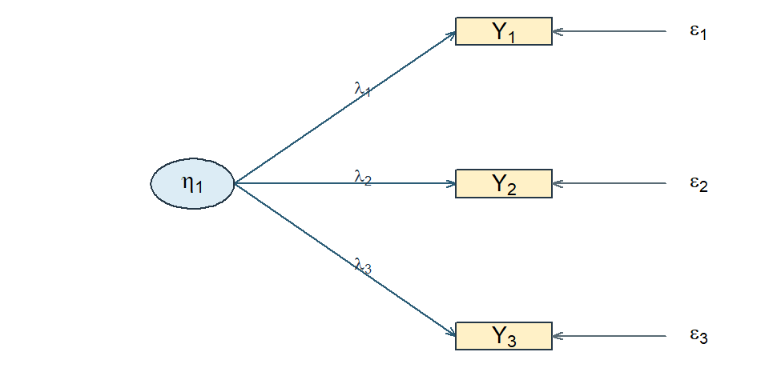
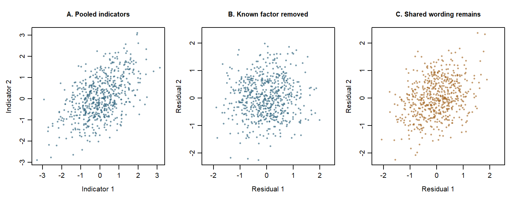
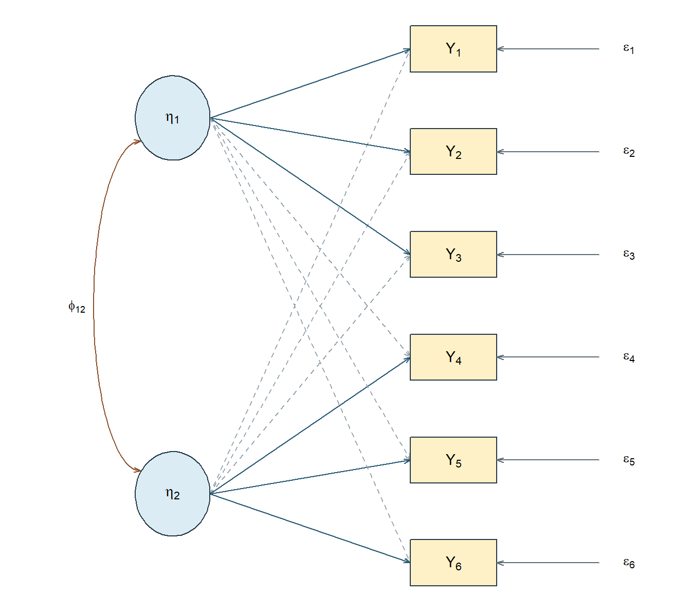
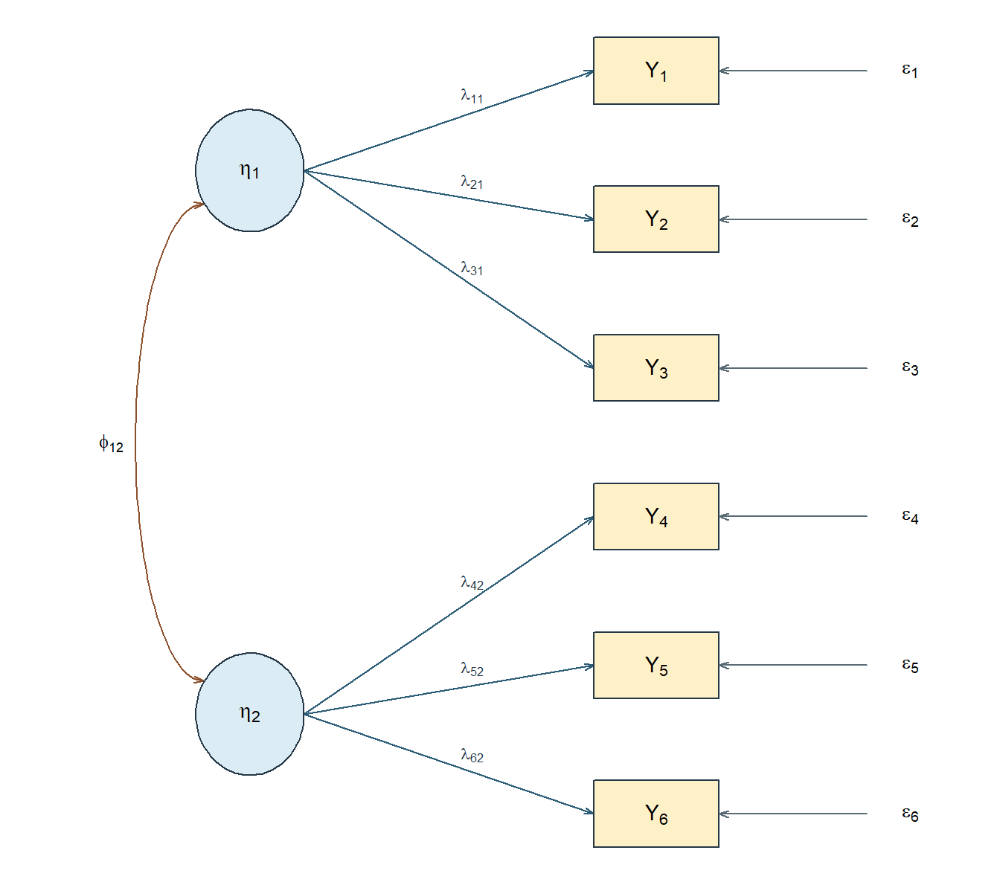
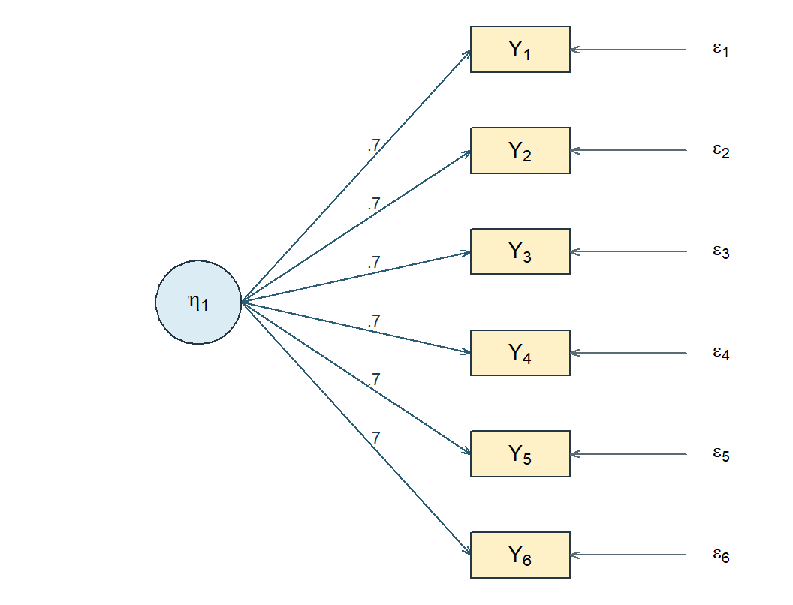
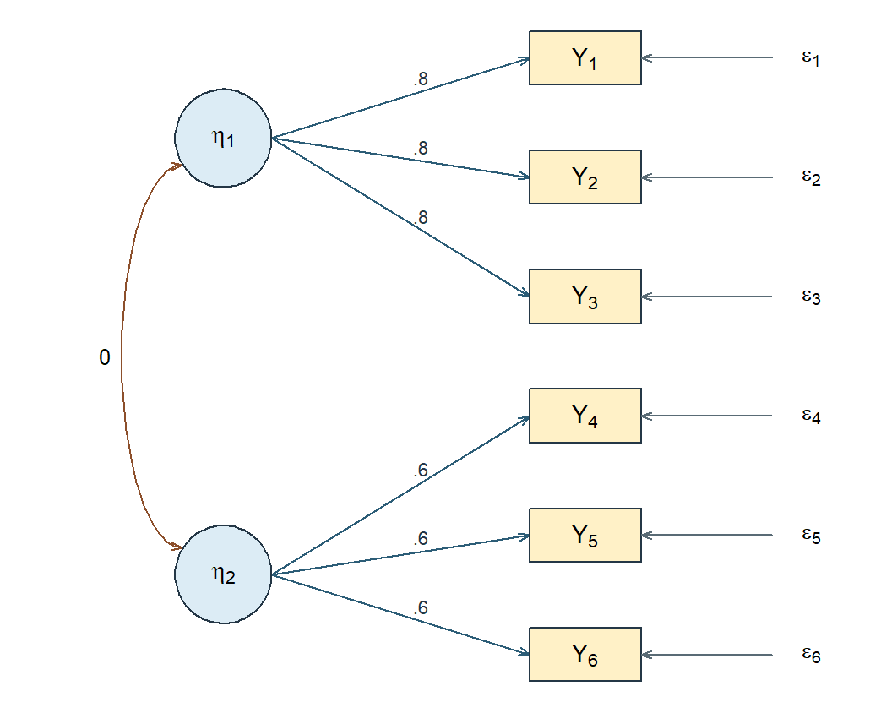
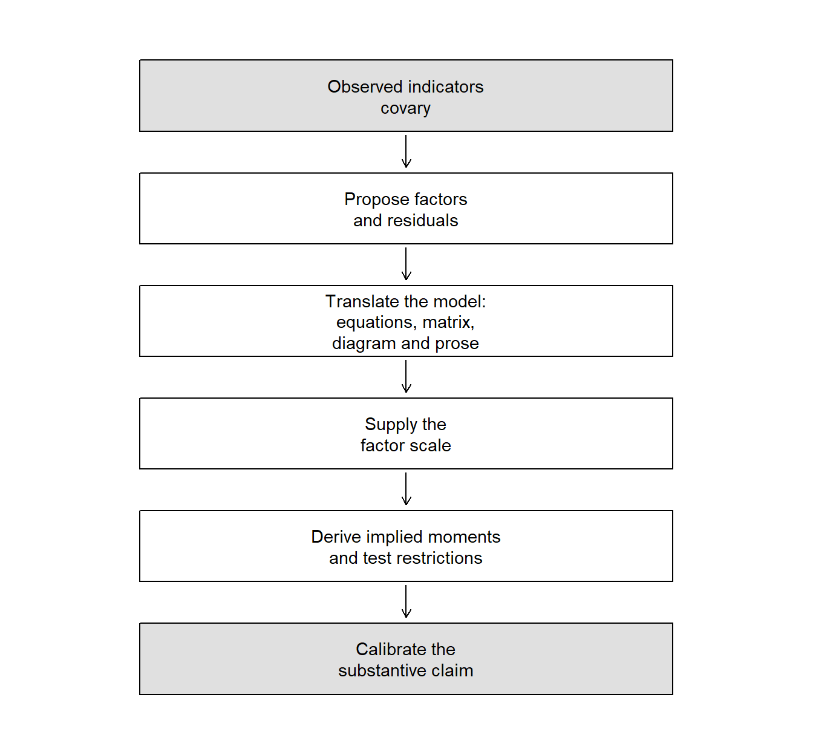

From Latent-Variable Modeling to Factor Analysis
NoteChapter overview
This chapter builds the common-factor model and marks the edge of what it can show. We first separate four things a study easily confuses: the construct in the research question, the unobserved variable the model introduces, the parameters that connect it to the recorded answers, and the residual. We then write one two-factor, six-indicator system four times over, as scalar equations, as parameter matrices, as a path diagram and as a sentence, and check the four against one another. A factor arrives with no units, no origin and no direction of its own, so we ask next what a scaling convention supplies and what it cannot decide. Expanding the model gives the covariance it implies, which splits observed covariance into a common part and a residual part and lets us count the information a set of indicators supplies against the parameters a model spends. Numbers arrive late: two constructed correlation records, one that a single factor reproduces exactly and one that no single factor can, and a tetrad that shows how a matrix refutes a one-factor account. A short optional closing section audits a published-style sentence that reads exact reproduction as evidence for two named constructs. By the end you will be able to state a common-factor model in any of its four representations, derive and reconstruct the covariance it implies with its communalities and uniquenesses, count free parameters and degrees of freedom, and say what exact reproduction does and does not establish. The chapter asks for variance, covariance, correlation, random variables and regression notation and nothing further: it estimates no data and uses no software, its indicators are continuous throughout, and the collection’s argument vocabulary is needed only in the optional section.
Suppose a study of study skills reports that its six-item questionnaire “measures two distinct constructs, Planning and Strategy”, and supports the sentence with a correlation table whose items fall into two clean blocks. Sentences of that shape are written constantly, about reading tests, symptom checklists, job-satisfaction scales and course evaluations alike.
The table is real. The two constructs are not in it. No column of the records holds a student’s planning ability and none holds their strategy use; what the study has is a pattern among six recorded answers and a proposal about what produced it. Whether that proposal is a useful statistical account of the pattern, and whether it licenses the words “two distinct constructs”, are separate questions with separate answers, and a report that runs them together can be exactly right about its arithmetic and quite wrong about its conclusion.
So this chapter asks:
When several indicators covary, when is a latent factor a useful statistical account of that covariance, and when may it be interpreted as the construct named in a study?
Part One asked what a set of records supports about variables that were recorded. Here the variable of primary interest was not recorded at all, so the first half of the answer is a model explicit enough to say what an unrecorded variable would imply for the recorded ones, and the second half is a limit on how far that implication reaches.
Latent variables and what they model
Observed responses, an unobserved account
Provisional answer. When several indicators covary, a common-factor model can represent their covariance through unobserved factors and residuals. Compatibility with that covariance supports the statistical representation. Interpreting a factor as a construct additionally requires a defensible account of the indicator domain, response process, population, and intended use. Naming a factor, obtaining a simple pattern, or even reproducing covariance exactly is not enough.
Behavioral and social research often concerns attributes that are not recorded directly. A dataset may contain responses to several planning items, but no column contains planning ability itself. A test records item scores, not error-free proficiency. Symptoms may be observed while the syndrome proposed to organize them remains a theoretical and statistical construction.
A latent-variable model does not turn the proposed attribute into an observation. Instead, it introduces one or more unobserved random variables and states how they are related to the variables that were recorded. The useful question is therefore not simply whether a factor can be named. It is whether the proposed model has observable consequences, and what conclusions those consequences support.
Answering that pair takes both halves: a covariance representation that can be checked, and a conclusion that stays within what such a check can establish. The first task is to distinguish the quantities that enter the representation.
Table 1 keeps four kinds of quantity apart.
| Quantity | Status | Example |
|---|---|---|
| Observed variable | Recorded for each unit | An item response \(Y_j\) |
| Latent random variable | Introduced by the model; not recorded | A common factor \(\eta_k\) |
| Unknown fixed parameter | A population quantity to be estimated | A loading \(\lambda_{jk}\) |
| Residual random variable | The part of an indicator the declared factors do not represent | \(\epsilon_j\) |
A factor is not merely a parameter; it is a random variable in the model, with a distribution over units. A loading is not a hidden score attached to a person; it is a parameter describing how the model relates an indicator to a factor. A residual is unobserved too, but that does not make it a substantive construct: it collects whatever the declared common factors leave out.
Figure 1 shows the smallest interesting case. Three observed indicators are drawn as rectangles, one unobserved variable as a circle, and the single-headed arrows run from the unobserved variable to the observed ones.
For three indicators, the picture summarizes equations of the form
\[ Y_{ij} = \nu_j + \lambda_j\eta_i + \epsilon_{ij}, \qquad j = 1,2,3 . \]
The indicator \(Y_{ij}\) is observed. The factor \(\eta_i\) and residual \(\epsilon_{ij}\) are random variables introduced by the model. The intercept \(\nu_j\) and loading \(\lambda_j\) are fixed but unknown population parameters.
The arrows deserve care. They state a direction of representation: the model writes each indicator as a function of the factor plus a residual, not the reverse. That is a modeling choice with real consequences, and it is the foundational common-factor representation developed here. It is not, by itself, evidence that the factor causes the responses. A diagram is a compact statement of a model; establishing that a latent attribute produces observed behavior requires theory about the response process and a design capable of supporting the claim. Model fit does not supply either.
Two inferential links are easy to conflate. First, relations among predictors, exposures and outcomes require a design capable of supporting causal interpretation; sampling units from a target population bears mainly on population generalization. Second, relating a proposed construct to a set of indicators requires defensible coverage of the construct’s content or behavioral domain. This second task is often called domain sampling, although indicator selection is commonly systematic and theory-guided rather than a literal probability sample.
Domain coverage supports a broad construct interpretation, but it is not sufficient by itself: the response process, dimensionality, population and intended use still matter. Without such a warrant, a factor may remain useful as a statistical device - for example, as a method factor - without being interpreted as the construct itself. Likewise, drawing an arrow from a factor to an indicator states the model’s reflective direction; neither domain coverage nor the arrow alone establishes a causal effect.
Two matters here remain genuinely contested, and it is worth knowing that before the algebra makes them invisible. The first is what a latent variable is: whether it should be treated as a real attribute that produces the responses, as a summary construction with no existence beyond the model, or as shorthand for the measuring operations themselves (Borsboom et al., 2003). The algebra below is compatible with all three readings and settles none of them. The second is the direction just described. For some constructs - socioeconomic status is the standard example - the indicators arguably produce the construct rather than express it, and under that formative reading internal consistency stops being a virtue and the common-factor model no longer applies (Bollen & Lennox, 1991; Edwards & Bagozzi, 2000). This chapter takes the reflective direction as its common-factor representation, a choice rather than a discovery. Chapter 7 also considers causal indicators and the assumptions needed to identify that different representation.
Why introduce something that is not observed? Because the model has consequences for quantities that are. Under assumptions developed below, two indicators connected to the same factor have the common covariance contribution
\[ \lambda_j\operatorname{Var}(\eta)\lambda_k . \]
When their residual covariance is zero, this is their entire model-implied covariance. Section 5 derives the complete result rather than asking the reader to accept this preview.
Only after the model and its terms are clear will we ask it to reproduce particular numerical patterns. The two six-indicator matrices in Section 6 are constructed, known-value teaching matrices. They are not sample correlations or evidence that particular constructs exist.
Classical test theory and the common-factor model
Readers arriving from measurement courses will know classical test theory, which decomposes an observed score into a true score and an error:
\[ X_{ir} = T_i + E_{ir}, \qquad T_i = E_r\!\left(X_{ir} \mid i\right), \qquad E_r\!\left(E_{ir} \mid i\right) = 0 . \]
Here \(X_{ir}\) is the score of person \(i\) on a hypothetical repetition \(r\) of a specified measurement procedure, \(T_i\) is its expected value over those repetitions, and \(E_{ir}\) is the deviation. The expectation holds the person fixed and averages over measurement conditions; it does not average over people. The true score is therefore a property of a person and a procedure, not automatically a pure measure of the intended attribute: an influence that is stable across repetitions stays inside \(T_i\) whether or not it belongs to the construct (Livingston, 2018).
The two frameworks overlap, but neither is simply a relabeling of the other. Under additional assumptions, a classical true-score decomposition can be represented as a one-factor model by identifying the common factor with true-score variation and fixing the relevant loadings at one. A common-factor model need not impose that restriction: it can let indicators relate to one or more factors with different strengths and can examine the resulting covariance restrictions. The connection is useful precisely because its assumptions must be stated; classical test theory does not in general assert that every set of item responses follows a one-factor model.
That is a difference in scope, not a ranking. Classical test theory answers questions about a score and its replication conditions with very few assumptions, and it remains the right tool for many of them. Common-factor models, item-response models and the neighboring families add structure to the joint distribution of responses, and buy item-level and multidimensional statements at the price of stronger assumptions and larger samples. A residual in a factor model is also not automatically classical error: stable item-specific content sits in the residual without being error under the declared repetition procedure. Reliability connects the two decompositions and needs conditions from both; it is not derivable from a loading pattern alone.
A map of latent-variable models
Table 2 crosses the form of the latent variable with the form of the observed indicators to give a serviceable orientation.
| Latent variable | Observed indicators | Common model families |
|---|---|---|
| Continuous | Continuous | Common-factor models, confirmatory factor analysis, many structural equation models |
| Continuous | Binary or ordered | Item-response models, categorical factor models |
| Categorical | Continuous | Latent-profile and finite-mixture models |
| Categorical | Categorical | Latent-class models, cognitive diagnosis models |
The map is an orientation, not a set of sealed boxes. Factor models can be fitted to ordered indicators through underlying-response formulations; item-response theory and categorical factor analysis share deep mathematical connections while using different parameterizations and traditions; mixture models combine continuous and categorical latent structure. Structural equation modeling is broader still, and can contain a factor measurement portion, regressions among variables, or both.
This chapter takes the first row: continuous factors and continuous indicators. Part Two as a whole stays there. That narrowing is what allows the algebra to be seen plainly before estimation choices and software output accumulate. Responses are treated as continuous throughout Part Two.
Exploratory and confirmatory orientations
The same common-factor equation can be used with very different amounts declared in advance.
An exploratory analysis ordinarily lets every indicator relate to every retained factor and uses rotation or equivalent constraints to choose an interpretable orientation. It suits situations where a construct exists conceptually but its dimensionality is unsettled. A confirmatory analysis fixes or constrains loadings and residual relations according to a specification stated before the focal analysis, and asks what follows.
The words describe orientations, not two unrelated models. Both use the same covariance decomposition. Theory can inform an exploratory analysis, and a confirmatory model can be revised after data are inspected. What separates them is the restrictions and the history of the decisions — not the name of the procedure. Practice usually falls somewhere along the continuum rather than at either end. Section 6.6 returns to the distinction once the shared model is in hand.
The common-factor model
One indicator at a time
Write \(y_{ij}\) for the response of unit \(i\) on indicator \(j\). The common-factor model expresses it as
\[ y_{ij} = \nu_j + \boldsymbol{\lambda}_j^{\mathsf T}\boldsymbol{\eta}_i + \epsilon_{ij}, \tag{1}\]
where \(i = 1,\ldots,n\) indexes units, \(j = 1,\ldots,p\) indexes indicators, \(\nu_j\) is an intercept, \(\boldsymbol{\lambda}_j\) is an \(m \times 1\) vector of loadings, \(\boldsymbol{\eta}_i\) is the \(m \times 1\) vector of common factors for unit \(i\), and \(\epsilon_{ij}\) is the residual. With two factors this reads
\[ y_{ij} = \nu_j + \lambda_{j1}\eta_{i1} + \lambda_{j2}\eta_{i2} + \epsilon_{ij} . \]
The resemblance to multiple regression is useful and has one decisive limit: the predictors \(\eta_{i1}\) and \(\eta_{i2}\) are not columns in the dataset. Their scale and orientation must be supplied by model constraints, and the parameters are learned from the joint pattern among all \(p\) indicators rather than from a single outcome at a time.
From equations to matrices
Collecting the \(p\) indicators for unit \(i\) into \(\mathbf{y}_i\),
\[ \mathbf{y}_i = \boldsymbol{\nu} + \boldsymbol{\Lambda}\boldsymbol{\eta}_i + \boldsymbol{\epsilon}_i , \tag{2}\]
with \(\mathbf{y}_i\), \(\boldsymbol{\nu}\) and \(\boldsymbol{\epsilon}_i\) in \(\mathbb{R}^{p}\), \(\boldsymbol{\eta}_i\) in \(\mathbb{R}^{m}\), and \(\boldsymbol{\Lambda}\) a \(p \times m\) loading matrix. The multiplication conforms because a \(p \times m\) matrix times an \(m \times 1\) vector returns a \(p \times 1\) vector: one common-factor contribution for each indicator. Row \(j\) of \(\boldsymbol{\Lambda}\) is \(\boldsymbol{\lambda}_j^{\mathsf T}\).
The model’s moment assumptions are
\[ \begin{aligned} E(\boldsymbol{\eta}_i) &= \boldsymbol{\alpha}, & \operatorname{Var}(\boldsymbol{\eta}_i) &= \boldsymbol{\Phi}, \\ E(\boldsymbol{\epsilon}_i) &= \mathbf{0}, & \operatorname{Var}(\boldsymbol{\epsilon}_i) &= \boldsymbol{\Theta}, \\ \operatorname{Cov}(\boldsymbol{\eta}_i, \boldsymbol{\epsilon}_i) &= \mathbf{0}. & & \end{aligned} \tag{3}\]
\(\boldsymbol{\Phi}\) is the \(m \times m\) matrix of factor variances and covariances; \(\boldsymbol{\Theta}\) is the \(p \times p\) matrix of residual variances and any residual covariances the model permits. Both are symmetric and positive semidefinite. The zero matrix in the last line is \(m \times p\).
The notation \(\boldsymbol{\alpha}\) is chosen deliberately. It is the latent intercept vector. In this chapter there are no regressions among latent variables, so \(\boldsymbol{\alpha}=E(\boldsymbol{\eta}_i)\). Once a structural coefficient matrix \(\mathbf B\) is introduced later, the marginal mean becomes \(E(\boldsymbol{\eta}_i)=(\mathbf I-\mathbf B)^{-1} \boldsymbol{\alpha}\). We will therefore call \(\boldsymbol{\alpha}\) the factor mean only in the present measurement-only setting.
Each assumption does a specific job, and it is worth naming them separately rather than accepting them as a block. The factor–residual condition is what will let the covariance decomposition split cleanly into two parts in Section 5. The mean conditions are what let the model say anything about \(E(\mathbf{y}_i)\). Note also what has not been assumed: zero covariance between factors and residuals is a moment restriction, not a statement that they are statistically independent, and \(\boldsymbol{\Theta}\) has not been required to be diagonal.
What a residual contains
It is tempting to read every \(\epsilon_{ij}\) as measurement error. That is too narrow. Residual variation can include random response fluctuation, but also stable item-specific content, wording or method effects, occasion effects, an omitted common factor, or a misspecification of the model. A residual covariance \(\theta_{jk}\) represents a relation between two indicators that the declared common factors do not account for. Whether such a relation is substantively defensible is a modeling question, not something a large diagnostic statistic settles on its own.
A diagonal \(\boldsymbol{\Theta}\) has a precise but limited meaning, and three claims are worth keeping apart. Under the moment assumptions of Equation 3, a diagonal \(\boldsymbol{\Theta}\) says that distinct residual components have zero unconditional covariance. If we add the conditional moment assumptions \(E(\boldsymbol{\epsilon}_i \mid \boldsymbol{\eta}_i) = \mathbf{0}\) and \(\operatorname{Var}(\boldsymbol{\epsilon}_i \mid \boldsymbol{\eta}_i) = \boldsymbol{\Theta}\), it also gives zero conditional residual covariance. Full local independence — the indicators being conditionally independent given the factors — is stronger still, and needs a distributional statement or an explicit factorization of the conditional response distribution. Zero covariance is not independence: two variables can have zero correlation and remain functionally related. None of the three claims says that the observed items are unrelated; that is the whole point of the model.
Consider a pair of indicators generated from a single common factor. Let \(\eta,u,e_1,e_2\) be independent standard Normal variables, and first set
\[ Y_1=.7\eta+\sqrt{.51}e_1,\qquad Y_2=.7\eta+\sqrt{.51}e_2. \]
Panel A of Figure 2 pools people with different factor values. Higher \(\eta\) tends to raise both indicators, producing their positive association. In Panel B we remove each person’s known simulated common contribution, \(.7\eta\). What remains is \(\sqrt{.51}e_1\) and \(\sqrt{.51}e_2\). These independent Normal responses have no remaining association. At any fixed value of the factor, the same independence holds: this construction supplies local independence, while the pooled indicators still covary.
Predict and explain. Suppose both indicators also respond to the same wording influence \(u\), independently of the focal factor. Change only the residual construction to
\[ Y_1=.7\eta+.4u+\sqrt{.35}e_1,\qquad Y_2=.7\eta+.4u+\sqrt{.35}e_2. \]
Before inspecting Panel C, predict whether removing \(.7\eta\) will remove all association. Each indicator still has variance \(1\), and its residual variance remains \(.4^2+.35=.51\). However, the shared component \(.4u\) remains in both residuals, so their conditional covariance is \(.4^2=.16\). The focal factor alone no longer supplies local independence.

| Construction | Pooled covariance | Conditional covariance given \(\eta\) |
|---|---|---|
| Independent residuals | .49 | .00 |
| Shared wording influence | .65 | .16 |
The table gives population implications, not correlations estimated from these 600 illustrative points. A finite cloud need not reproduce its population covariance exactly. Shared wording raises pooled covariance from \(.49\) to \(.49+.16=.65\), although neither loading nor residual variance changes. The source of covariance matters as well as its magnitude.
In an empirical study the factor values are unobserved. An estimated factor score is an uncertain function of the indicators, so subtracting a contribution based on that score is a different operation. A score-residual plot cannot stand in for the known-factor comparison or establish local independence. Here the stronger conclusion follows from the declared Normal construction; a moment model with zero covariances alone would not provide it.
One model, four representations
We now fix a single system and keep it in view for the rest of the chapter: six observed indicators and two common factors. Allowing every indicator to relate to both factors gives six equations,
\[ \begin{aligned} y_{i1} &= \nu_1 + \lambda_{11}\eta_{i1} + \lambda_{12}\eta_{i2} + \epsilon_{i1},\\ y_{i2} &= \nu_2 + \lambda_{21}\eta_{i1} + \lambda_{22}\eta_{i2} + \epsilon_{i2},\\ y_{i3} &= \nu_3 + \lambda_{31}\eta_{i1} + \lambda_{32}\eta_{i2} + \epsilon_{i3},\\ y_{i4} &= \nu_4 + \lambda_{41}\eta_{i1} + \lambda_{42}\eta_{i2} + \epsilon_{i4},\\ y_{i5} &= \nu_5 + \lambda_{51}\eta_{i1} + \lambda_{52}\eta_{i2} + \epsilon_{i5},\\ y_{i6} &= \nu_6 + \lambda_{61}\eta_{i1} + \lambda_{62}\eta_{i2} + \epsilon_{i6}, \end{aligned} \tag{4}\]
which collect into the loading matrix
\[ \boldsymbol{\Lambda} = \begin{bmatrix} \lambda_{11} & \lambda_{12}\\ \lambda_{21} & \lambda_{22}\\ \lambda_{31} & \lambda_{32}\\ \lambda_{41} & \lambda_{42}\\ \lambda_{51} & \lambda_{52}\\ \lambda_{61} & \lambda_{62} \end{bmatrix}, \qquad \boldsymbol{\Phi} = \begin{bmatrix} \phi_{11} & \phi_{12}\\ \phi_{12} & \phi_{22} \end{bmatrix} . \tag{5}\]
Rows of \(\boldsymbol{\Lambda}\) belong to indicators and columns to factors, so \(\lambda_{42}\) relates \(Y_4\) to the second factor. Reading the subscripts in that order is the quickest way to catch a path diagram that disagrees with its matrix. The residual covariance matrix is symmetric and \(6 \times 6\); a diagonal working version is \(\boldsymbol{\Theta} = \operatorname{diag}(\theta_{11},\ldots,\theta_{66})\).
Figure 3 draws the same system. Every indicator receives an arrow from both factors, and the double-headed arrow between the factors is the covariance \(\phi_{12}\).

Restricting the pattern
Setting the cross-loadings to zero, so the first three indicators relate only to \(\eta_1\) and the last three only to \(\eta_2\), gives
\[ \boldsymbol{\Lambda}_{\text{simple}} = \begin{bmatrix} \lambda_{11} & 0\\ \lambda_{21} & 0\\ \lambda_{31} & 0\\ 0 & \lambda_{42}\\ 0 & \lambda_{52}\\ 0 & \lambda_{62} \end{bmatrix} . \tag{6}\]
Figure 4 redraws the same system after the cross-loadings are fixed at zero.

Each zero is a restriction, not a drawing convenience. It says that, according to this model, the second factor makes no direct contribution to \(Y_1\). Restrictions of this kind are the substance of a confirmatory specification, and they are what make a model capable of being wrong: a model in which everything is free forbids nothing.
The four representations must agree, and it is worth checking that they do. For the restricted model: the path from \(\eta_1\) to \(Y_4\) is absent in the diagram; \(\lambda_{41} = 0\) in the equations; row 4, column 1 of \(\boldsymbol{\Lambda}\) is zero; and any common covariance between \(Y_1\) and \(Y_4\) must therefore travel through \(\phi_{12}\), unless a residual covariance is also permitted. The fourth representation is the sentence: six indicators are represented by two possibly correlated factors; each indicator has one loading and one residual; cross-loadings and residual covariances are fixed at zero. That sentence should be recoverable from any of the other three without guessing.
Reading a parameter family
Counting arrows in a diagram is not a reliable way to know what a model contains, because the same picture can represent different models. What matters is the status of each element. Table 4 turns that status into four sets of questions that should be answered for every specification.
| Family | Matrix | Questions to settle |
|---|---|---|
| Intercepts | \(\boldsymbol{\nu}\) | Are means modeled, or is the analysis covariance-only? |
| Loadings | \(\boldsymbol{\Lambda}\) | Which entries are fixed at zero, fixed for scale, constrained equal, or free? |
| Factor variances and covariances | \(\boldsymbol{\Phi}\) | Are variances fixed to set a scale? Is the covariance free? |
| Residual variances and covariances | \(\boldsymbol{\Theta}\) | Is the matrix diagonal? Are any residual covariances justified and free? |
A loading can also be fixed at a value other than zero or one. That possibility looks like a technicality here and becomes central later: growth models fix a whole column of \(\boldsymbol{\Lambda}\) to values such as \(0, 1, 2, 3\) so that the corresponding factor expresses change per unit of time. The point is that fixed, free and constrained are three different things, and a diagram alone does not distinguish them.
The factor scale
An observed variable arrives with a scale: if height is recorded in centimetres, a one-unit change means something definite. An unobserved factor arrives with nothing. This section works through the consequences, which are less an inconvenience than a permanent feature of latent-variable models.
The factor scale is indeterminate
Take a one-factor model and any nonzero constant \(a\). Define
\[ \eta_i^{*} = a\,\eta_i, \qquad \alpha^{*} = a\,\alpha, \qquad \lambda_j^{*} = \lambda_j / a, \qquad \phi^{*} = a^{2}\phi . \tag{7}\]
The factor’s contribution to an indicator’s mean is unchanged, since \(\lambda_j^{*}\alpha^{*} = (\lambda_j/a)(a\alpha) = \lambda_j\alpha\), and its contribution to a covariance is unchanged too:
\[ \lambda_j^{*}\phi^{*}\lambda_k^{*} = \frac{\lambda_j}{a}\,\bigl(a^{2}\phi\bigr)\,\frac{\lambda_k}{a} = \lambda_j\phi\lambda_k . \]
Concretely, with \(\lambda_j = .8\) and \(\phi = 1\), setting \(a = 2\) gives a loading of \(.4\) and a factor variance of \(4\); the common contribution to the indicator’s variance is \(.4^{2}(4) = .64\) either way. Everything else — \(\nu_j\), \(\epsilon_{ij}\), \(\theta_{jk}\) — is untouched, because the transformation acts only on the factor’s own metric. The observed data cannot choose between these descriptions, because they imply exactly the same observed moments.
Table 5 contrasts two conventions in general use. Both simply fix a metric.
| Convention | What is fixed | What is estimated |
|---|---|---|
| Marker variable | One loading per factor, usually at 1 | The factor variance and the remaining loadings |
| Fixed factor | The factor variance, usually at 1 | All permitted loadings |
Neither is superior. Unstandardized loadings and factor variances differ between them; the implied covariance among the indicators does not.
With several factors, the freedom is wider than changing one scale at a time. A nonsingular transformation can mix or rotate the factor axes while corresponding changes to the loading and factor-covariance matrices leave the observed covariance unchanged. The new loadings can look quite different even though they represent the same common covariance. Section 7 works one orthogonal example numerically; the general transformation belongs with rotation, where the freedom is used deliberately for interpretation.
Sign and location
Setting \(a = -1\) in Equation 7 reverses the sign of every factor value and every loading while leaving each product, and therefore the implied covariance, unchanged. A factor with loadings \((.8, .7, .6)\) and one with \((-.8, -.7, -.6)\) describe the same observed correlations. The direction is fixed by convention and by what the items say, not by the data; a negative sign is not by itself a problem, and a sign flip between two equivalent solutions is not evidence that anything changed.
Location behaves the same way once means are in the model. For any fixed \(m \times 1\) vector \(\mathbf{c}\),
\[ \boldsymbol{\eta}_i^{*} = \boldsymbol{\eta}_i + \mathbf{c}, \qquad \boldsymbol{\alpha}^{*} = \boldsymbol{\alpha} + \mathbf{c}, \qquad \boldsymbol{\nu}^{*} = \boldsymbol{\nu} - \boldsymbol{\Lambda}\mathbf{c}, \tag{8}\]
leaves the implied mean untouched: \(\boldsymbol{\nu}^{*} + \boldsymbol{\Lambda}\boldsymbol{\alpha}^{*} = \boldsymbol{\nu} + \boldsymbol{\Lambda}\boldsymbol{\alpha}\). So the observed means alone cannot determine both unrestricted factor means and unrestricted intercepts. In a single-group model the usual convention fixes the factor means at zero and estimates the intercepts. Comparing latent means across groups or occasions requires additional equality restrictions and a reference group; that is the subject of measurement invariance, later in Part Two, and it is worth noticing now that the question is one of identification, not of finding a better estimator.
Changing the units of the indicators
A different operation is to rescale the observed variables themselves — recording a test in percentages rather than raw points, say. This also produces a model that fits equally well, but for an entirely different reason: the loadings, residual variances and implied covariances all change in step with the new units, coherently and predictably. Nothing is indeterminate here; the information is the same information in a different metric.
The distinction matters because the two are easy to conflate. Choosing a factor’s scale is supplying a metric to something that has none. Changing an indicator’s units is re-expressing something that already had them. The same distinction governs the relationship between analysing a covariance matrix and analysing a correlation matrix. Chapter 3 treats that relationship directly: it carries out the algebra of a change of observed units and the reparameterization that turns a covariance structure into a correlation structure, which is what lets one say exactly which parameters move, and by how much, when the metric changes.
The model-implied covariance structure
The common-factor model earns its keep because it implies a specific covariance structure among the observed indicators. That structure is what the estimators in this book are fitted to, which is why factor analysis and structural equation modeling are together known as covariance structure analysis. The name describes the usual target rather than a restriction: raw-data likelihoods are also used, especially with incomplete data; under complete multivariate-normal sampling, the sample mean vector and covariance matrix are sufficient statistics. We derive the structure rather than quote it.
For indicators \(j\) and \(k\), subtract the means and use Equation 1:
\[ \begin{aligned} y_{ij} - E(y_{ij}) &= \boldsymbol{\lambda}_j^{\mathsf T} (\boldsymbol{\eta}_i - \boldsymbol{\alpha}) + \epsilon_{ij}, \\ y_{ik} - E(y_{ik}) &= \boldsymbol{\lambda}_k^{\mathsf T} (\boldsymbol{\eta}_i - \boldsymbol{\alpha}) + \epsilon_{ik} . \end{aligned} \]
Expanding the covariance shows all four contributions:
\[ \begin{aligned} \operatorname{Cov}(y_{ij},y_{ik}) ={}& \boldsymbol{\lambda}_j^{\mathsf T}\boldsymbol{\Phi} \boldsymbol{\lambda}_k \\ &+\operatorname{Cov}\!\left[ \boldsymbol{\lambda}_j^{\mathsf T} (\boldsymbol{\eta}_i-\boldsymbol{\alpha}),\epsilon_{ik}\right] \\ &+\operatorname{Cov}\!\left[ \epsilon_{ij}, \boldsymbol{\lambda}_k^{\mathsf T} (\boldsymbol{\eta}_i-\boldsymbol{\alpha})\right] +\theta_{jk}. \end{aligned} \]
The first term is the common-factor contribution, the middle two are factor–residual cross terms, and the last is the residual covariance. The factor–residual assumption in Equation 3 sets both middle terms to zero, leaving
\[ \boxed{\; \operatorname{Cov}(y_{ij}, y_{ik}) = \boldsymbol{\lambda}_j^{\mathsf T}\boldsymbol{\Phi} \boldsymbol{\lambda}_k + \theta_{jk} \; } \tag{9}\]
and, for \(j = k\),
\[ \operatorname{Var}(y_{ij}) = \boldsymbol{\lambda}_j^{\mathsf T}\boldsymbol{\Phi} \boldsymbol{\lambda}_j + \theta_{jj} . \tag{10}\]
Stacking over all pairs gives the matrix form:
\[ \boxed{\; \boldsymbol{\Sigma}(\boldsymbol{\vartheta}) = \boldsymbol{\Lambda}\boldsymbol{\Phi}\boldsymbol{\Lambda}^{\mathsf T} + \boldsymbol{\Theta} \; } \tag{11}\]
where \(\boldsymbol{\vartheta}\) collects the free parameters and \(\theta_{jk}\) remains an entry of \(\boldsymbol{\Theta}\). Every observed covariance is thus split into a common part, carried by the factors, and a residual part. If \(\theta_{jk}=0\), a strong covariance requires the two indicators to receive a sufficiently strong joint contribution from shared factors. If \(\theta_{jk}\ne0\), residual association can also contribute; the decomposition prevents that association from being silently attributed to the factors.
This identity needs finite second moments and the stated moment restrictions. It does not need normality. Distributional assumptions enter separately, through particular estimators, standard errors and test statistics; that boundary is worth keeping explicit.
The same assumptions give a second useful matrix:
\[ \operatorname{Cov}(\mathbf y_i,\boldsymbol{\eta}_i) =\boldsymbol{\Lambda}\boldsymbol{\Phi}. \]
\(\boldsymbol{\Lambda}\) is the pattern matrix: its entries are the coefficients in the equations for the indicators. \(\boldsymbol{\Lambda}\boldsymbol{\Phi}\) is the structure matrix: its entries are indicator–factor covariances. They are indicator–factor correlations only when both sides have been standardized. When factors are orthogonal and have unit variance, pattern and structure coincide; when factors correlate, they need not. The two matrices have to be read side by side whenever an oblique solution is interpreted.
Communality and uniqueness
The common part of an indicator’s variance,
\[ h_j^{2} = \boldsymbol{\lambda}_j^{\mathsf T}\boldsymbol{\Phi} \boldsymbol{\lambda}_j , \tag{12}\]
is its communality under the declared model. The qualifier matters: changing the number of factors, the loading pattern, or the factor covariances changes \(h_j^{2}\). For a standardized indicator whose variance decomposes into just these two parts, \(1 = h_j^{2} + \theta_{jj}\), so the residual variance \(\theta_{jj}\) — often called the uniqueness — is \(1 - h_j^{2}\). The larger the share the factors account for, the smaller the remainder.
In raw units, common variance is an amount rather than a proportion; its share of total indicator variance is \(h_j^2/\operatorname{Var}(Y_j)\). Hold the loadings and factor covariances fixed and increase only the residual variance. The common variance stays the same, but total indicator variance increases, so its common share falls. This changes a component of the model; it is a different operation from expressing an unchanged indicator in new units.
If a standardized indicator has one nonzero loading on a unit-variance factor, this reduces to \(h_j^{2} = \lambda_j^{2}\). That shortcut is used constantly and is not the general definition. With two correlated factors the communality expands to
\[ h_j^{2} = \lambda_{j1}^{2}\phi_{11} + 2\lambda_{j1}\lambda_{j2}\phi_{12} + \lambda_{j2}^{2}\phi_{22}, \tag{13}\]
and the middle term is why squared loadings cannot simply be added when factors correlate. In an admissible standardized solution the communality lies between zero and one; an estimated \(\theta_{jj} < 0\) is an improper, or Heywood, solution and signals a problem to investigate rather than a discovery that an indicator has more than 100% common variance.
Uniqueness means variance the declared common factors do not represent. It does not mean that all of that variance is random error, for the reasons given in Section 2.3.
A moment structure, not only a covariance structure
The same assumptions also imply a mean structure:
\[ E(\mathbf{y}_i) = \boldsymbol{\mu}(\boldsymbol{\vartheta}) = \boldsymbol{\nu} + \boldsymbol{\Lambda}\boldsymbol{\alpha} . \tag{14}\]
Most of Part Two analyzes covariances alone, holding the mean structure aside, and that is a legitimate and common choice. It is worth being clear that it is a choice. Means are part of the model even when they are set aside, and two of Part Two’s later destinations depend on them entirely: measurement invariance compares intercepts and factor means across groups, and latent growth models place a whole trajectory in \(\boldsymbol{\alpha}\) while fixing \(\boldsymbol{\Lambda}\) to a time basis.
A brief look at the second of those makes the point concrete. Suppose four measurements are taken on the same people at equally spaced occasions, with
\[ \boldsymbol{\Lambda} = \begin{bmatrix} 1 & 0\\ 1 & 1\\ 1 & 2\\ 1 & 3 \end{bmatrix}, \qquad \boldsymbol{\alpha} = (\alpha_1, \alpha_2)^{\mathsf T} . \]
Every loading is fixed. The column of ones makes the first factor contribute equally at every occasion, so \(\alpha_1\) is an average starting level; the column \(0, 1, 2, 3\) is a time basis, so \(\alpha_2\) is an average change per occasion. With intercepts fixed at zero, the implied means \(\boldsymbol{\nu} + \boldsymbol{\Lambda}\boldsymbol{\alpha}\) trace the average trajectory. The variances and covariances in \(\boldsymbol{\Phi}\) then describe how much individuals differ in where they start and how fast they change, which is usually the substantive point. We are not fitting this model here, and its full assumptions come much later. It is shown because it uses only Equation 2 and Equation 14, with the loadings fixed to substantively chosen values rather than estimated — a possibility Table 4 raised and this makes real.
What a restriction buys
A model that could not be wrong is not worth testing, so it is worth asking what a set of restrictions actually commits us to. The question is settled by counting, and the count has three ingredients.
The first is how much distinct information the observed variables supply. For \(p\) indicators the covariance matrix is symmetric, so its distinct entries number
\[ u=\frac{p(p+1)}{2}, \tag{15}\]
which is \(21\) for the six indicators used here. These are the distinct moments: 21 numbers, not 21 observations. Collecting more respondents estimates the same 21 quantities more precisely; it never creates a twenty-second.
The second is how many quantities the model leaves free. Here Section 4 matters directly. A factor has no scale of its own, so a model that left both the loadings and the factor variance free would be asking the data to determine something they cannot: infinitely many pairs give identical implied moments. A scaling convention removes that indeterminacy, and in doing so removes a parameter from the free count. Restrictions of every kind - a cross-loading fixed at zero, a residual covariance forbidden, two loadings constrained equal - do the same arithmetic.
The third is the difference between them,
\[ df=u-t, \tag{16}\]
with \(t\) the number of free parameters. For the two-factor simple-structure model of Section 3.1, with the factor variances fixed at one and \(\phi_{12}\) free, \(t\) counts six loadings, one factor correlation and six residual variances: \(t=13\) and \(df=21-13=8\). The one-factor model of Section 6.1 has six loadings and six residual variances, so \(t=12\) and \(df=9\), and the orthogonal record of Section 6.2, which fixes \(\phi_{12}\) at zero rather than estimating it, has the same count, \(t=12\) and \(df=9\).
Those nine degrees of freedom are the sense in which the one-factor model forbids something, and Section 6.3 makes one of the prohibitions visible: a single factor with uncorrelated residuals requires every tetrad to vanish, and a matrix in which one does not cannot be reproduced. A model with \(df<0\) asks the data for more than they contain. A model with \(df=0\) has used up its budget without spending any on restrictions, so it cannot be contradicted by the count; whether it can reproduce a given matrix is a further question about that particular parameterization, since equality constraints, fixed values and the requirement that variances stay nonnegative can all keep a just-identified model from reaching every covariance matrix of its size.
Two cautions belong with the count, because it is easy to ask more of it than it can deliver. A nonnegative \(df\) does not establish that the parameters can be recovered at all: whether the moments determine the parameters uniquely is a separate question - identification - which counting can rule out but never confirm. And a positive \(df\) says the model is refutable, not that it is true. Both questions are taken up systematically once models are estimated, where the count becomes a routine check rather than a passing observation.
Reading the numbers
We can now put numbers into the representation. Both correlation matrices in this section are constructed: the parameters came first and the correlations were computed from them. That is deliberate. Because the values are exact, any disagreement is an arithmetic error rather than sampling variation. They are ideal for learning the algebra and useless as evidence about any real population.
One common factor
The first matrix, shown in Table 6, has the same \(.49\) correlation for every distinct pair.
| \(Y_1\) | \(Y_2\) | \(Y_3\) | \(Y_4\) | \(Y_5\) | \(Y_6\) | |
|---|---|---|---|---|---|---|
| \(Y_1\) | 1.00 | |||||
| \(Y_2\) | .49 | 1.00 | ||||
| \(Y_3\) | .49 | .49 | 1.00 | |||
| \(Y_4\) | .49 | .49 | .49 | 1.00 | ||
| \(Y_5\) | .49 | .49 | .49 | .49 | 1.00 | |
| \(Y_6\) | .49 | .49 | .49 | .49 | .49 | 1.00 |
The repeated value suggests a single common contribution shared evenly across all six indicators. Let us check that representation rather than infer it from appearance alone.
Let all six standardized indicators relate to a single unit-variance factor with loading \(.7\):
\[ \boldsymbol{\Lambda}_1 = (.7,\,.7,\,.7,\,.7,\,.7,\,.7)^{\mathsf T}, \qquad \boldsymbol{\Phi}_1 = [1], \qquad \boldsymbol{\Theta}_1 = .51\,\mathbf{I}_6 . \]
Figure 5 draws this parameterization before the entrywise check.

Apply Equation 9 and Equation 10. Each diagonal entry is \(.7^{2} + .51 = .49 + .51 = 1\), as a correlation matrix requires. Each off-diagonal entry is \(.7 \times 1 \times .7 = .49\). That reproduces Table 6 exactly. Every communality is \(.7^{2} = .49\) and every uniqueness is \(1 - .7^{2} = .51\).
The column sum of squared loadings is \(6(.7^{2}) = 2.94\). This quantity is often called the factor’s eigenvalue, and the label is safe only under specific conditions. Here it is the sum of squares of a loading column — an SS loading. It happens to equal the single nonzero eigenvalue of the common part \(\boldsymbol{\Lambda}_1\boldsymbol{\Lambda}_1^{\mathsf T}\), but it is not an eigenvalue of the correlation matrix in Table 6, whose eigenvalues are \(3.45\) and five values of \(.51\). Adding \(.51\) to the diagonal shifts every eigenvalue by \(.51\). Wherever eigenvalues do real work in deciding how many factors to retain, the matrix being decomposed has to be named; the habit starts here.
Two orthogonal factors
The second matrix in Table 7 has two blocks: correlations are \(.64\) within the first three indicators, \(.36\) within the last three, and zero across blocks.
| \(Y_1\) | \(Y_2\) | \(Y_3\) | \(Y_4\) | \(Y_5\) | \(Y_6\) | |
|---|---|---|---|---|---|---|
| \(Y_1\) | 1.00 | |||||
| \(Y_2\) | .64 | 1.00 | ||||
| \(Y_3\) | .64 | .64 | 1.00 | |||
| \(Y_4\) | .00 | .00 | .00 | 1.00 | ||
| \(Y_5\) | .00 | .00 | .00 | .36 | 1.00 | |
| \(Y_6\) | .00 | .00 | .00 | .36 | .36 | 1.00 |
For the second matrix, let the first three indicators relate to \(\eta_1\) with loading \(.8\) and the last three to \(\eta_2\) with loading \(.6\), with the factors uncorrelated:
\[ \boldsymbol{\Lambda}_2 = \begin{bmatrix} .8 & 0\\ .8 & 0\\ .8 & 0\\ 0 & .6\\ 0 & .6\\ 0 & .6 \end{bmatrix}, \qquad \boldsymbol{\Phi}_2 = \mathbf{I}_2, \qquad \boldsymbol{\Theta}_2 = \operatorname{diag}(.36,.36,.36,.64,.64,.64). \]
Figure 6 draws the corresponding two-factor parameterization.

Within the first block, \(\operatorname{Cov}(Y_1, Y_2) = .8 \times 1 \times .8 = .64\). Within the second, \(.6 \times 1 \times .6 = .36\). Across the blocks,
\[ \operatorname{Cov}(Y_1, Y_4) = \begin{bmatrix} .8 & 0 \end{bmatrix} \begin{bmatrix} 1 & 0 \\ 0 & 1 \end{bmatrix} \begin{bmatrix} 0 \\ .6 \end{bmatrix} = 0 , \]
which reproduces Table 7. The first three communalities are \(.64\) with uniquenesses \(.36\); the last three are \(.36\) with uniquenesses \(.64\). The SS loadings are \(3(.8^{2}) = 1.92\) and \(3(.6^{2}) = 1.08\).
The exact zeros between blocks follow from three restrictions acting together: the simple-structure loading pattern, the orthogonality of the factors, and the absence of cross-block residual covariances. They are not a general property of two-factor models.
Why one factor will not do
The first matrix yielded to a single factor; the second did not. It is worth seeing that this is a fact about the numbers, not an impression from the layout.
Under a one-factor model with uncorrelated residuals, any covariance is \(\sigma_{jk} = \lambda_j \phi \lambda_k\). Take any four indicators and form two products of two covariances each:
\[ \sigma_{12}\sigma_{45} - \sigma_{14}\sigma_{25} = \lambda_1\lambda_2\lambda_4\lambda_5\phi^{2} - \lambda_1\lambda_4\lambda_2\lambda_5\phi^{2} = 0 . \tag{17}\]
The two products contain the same four loadings and must cancel. This tetrad restriction is a testable consequence: a single factor predicts it for every set of four indicators, whatever the loadings are.
In Table 6 the restriction holds, as it must. In Table 7, taking \(Y_1, Y_2, Y_4, Y_5\),
\[ \sigma_{12}\sigma_{45} - \sigma_{14}\sigma_{25} = (.64)(.36) - (0)(0) = .2304 \ne 0 , \]
so no one-factor model with uncorrelated residuals can reproduce that matrix exactly, whatever values its loadings take.
Both the quadruple and its pairing are chosen rather than arbitrary: of the 15 four-indicator subsets of this record, each of the 9 that take two indicators from each block has one pairing — the block-matching one — whose product is \(.2304\) and two whose products are \(0\), so two of its three tetrads equal \(\pm.2304\) and the third is \(0\), while every tetrad of the 6 three-and-one subsets is \(0\); one nonzero tetrad anywhere refutes the one-factor representation.
The result concerns exact reproduction of this known-value matrix; approximate fit to a sample covariance matrix is a different question. This is the first genuine model comparison in the book: a restriction with observable consequences, and a set of numbers that violates it. Degrees of freedom are a systematic count of restrictions of exactly this kind.
Neighboring objects
Several things get loosely called a dimension or a score, and none of them is interchangeable with another. Table 8 separates them before we compare factor-score estimates and principal components more closely.
| Object | What it is | Recorded for unit \(i\)? |
|---|---|---|
| Construct | A concept in the research question, such as planning; its meaning comes from theory, item content, response processes, population and intended use | Not made observable by naming a factor |
| Common factor \(\eta_{ik}\) | An unobserved random variable in the model | No |
| Factor-score estimate \(\widehat{\eta}_{ik}\) | A prediction from observed responses, a fitted model and a scoring rule | Computed, but not the factor itself |
| Principal component | A weighted composite of observed variables chosen to summarize variance | Computed from the data |
| Prespecified composite | A declared rule such as a sum or mean of items | Computed from the data |
A factor-score estimate depends on the fitted parameters, the items included, their coding and the scoring rule; different rules give different numbers from the same fitted model. Because the factor itself is never observed, no scoring rule turns an estimate into an error-free measurement of it.
Principal component analysis deserves a sentence of its own, because it is often reached for in the same situations. A principal component is a weighted composite of the observed variables, with weights chosen to capture as much observed variance as possible. The common-factor model proposes something different in kind: a decomposition of the covariance into a common part and a residual part, as in Equation 11. The two can produce similar-looking numbers and answer different questions. Substituting one for the other changes what is being claimed; neither is generally superior.
Exploratory, confirmatory and hybrid uses
With the model in hand, the orientations of Section 1.4 can be stated more precisely. Table 9 summarizes what each orientation declares in advance and what it asks the analysis to choose.
| Approach | What is declared in advance | What the analysis chooses |
|---|---|---|
| Exploratory | The items, the range of factor counts considered, and the estimation and rotation choices | The number of factors, and the loading pattern within an equivalent family of orientations |
| Confirmatory | The number of factors, the loading pattern, factor relations and residual structure | Parameter values, and whether the declared restrictions are compatible with the evidence |
| Hybrid or partial | Some relations prespecified, others left free | Depends on the exact parameterization, which must be stated |
Exploratory analysis is not mechanical discovery: the items entered, the association matrix, the number of factors considered, the extraction criterion, the rotation family and the interpretation are all decisions. Confirmatory analysis is not automatic confirmation: it evaluates the consequences of a specification and can expose strain, equivalent alternatives, or evidence too weak to distinguish anything.
The two are often combined, and there is a real hazard in doing so carelessly. A pattern discovered in one body of evidence and then “confirmed” on the same evidence has not been confirmed; the second analysis is a restatement of the first. The remedy is not to avoid combining them but to keep the analytic status of each decision visible: what was specified in advance, what was chosen after looking, and what evidence has been used already. A structure chosen using one body of evidence receives a genuinely new confirmatory test only from evidence not used to choose it - for example, a prespecified split or a new sample. If evidence is reused, the resulting analysis should be described as exploratory or revised rather than independently confirmed.
The exploratory-to-confirmatory workflow
The two orientations are most often used in sequence, and the sequence has a structural requirement that is easy to state and easy to violate. An exploratory analysis chooses a factor count, a loading pattern and a set of interpretations by consulting the data. A confirmatory analysis asks whether a stated pattern is compatible with the data. If both consult the same data, the second analysis can still fail - it imposes exact zeros and other restrictions the exploratory solution never contained, and those can be contradicted. What it cannot do is provide independent support, because the restrictions were selected for their agreement with these very numbers. The result is a test whose apparent evidential value has been inflated by the selection that preceded it, not a test that is guaranteed to pass.
The remedy is to give the two stages different evidence. In practice this means splitting the available data into at least two parts before the exploratory work begins - one part to develop on, one held back - or collecting a second sample. The split must be declared in advance and made without reference to the outcome; a split chosen after seeing which half behaves better is not a split at all.
Splitting is not free. Two halves of \(n\) each carry less information than one sample of \(2n\), and factor recovery degrades in small samples with modest loadings, so a study too small to split may be too small for the sequence (Fabrigar et al., 1999). The honest alternatives are to collect more data, to report the analysis as exploratory and leave confirmation to later work, or to declare the model in advance and skip the exploratory stage entirely. What is not an alternative is to run both stages on one sample and describe the second as confirmation.
Passing a model from one stage to the other requires more than a factor count. Table 10 lists what has to be fixed in writing before the held-back data are opened, because each of these is a decision the exploratory stage made and the confirmatory stage must not remake.
| What is transferred | Why it must be fixed in advance |
|---|---|
| The item set and its order | Dropping a poorly behaved item after seeing the second sample makes that sample exploratory too |
| The number of factors | The count is the exploratory stage’s principal finding, and the claim under test |
| Which loadings are free and which are fixed at zero | The zeros are the restrictions being tested; adding one back is a new model |
| Factor variances, covariances and the scaling convention | These determine the metric in which every coefficient is read |
| The residual structure | A residual covariance freed after inspecting fit is a revision, not a confirmation |
| Named rival models | Comparisons decided in advance are interpretable; comparisons invented afterwards are selected on the same evidence |
A revision discovered while examining the held-back sample is a legitimate and often necessary thing to do. It simply changes the status of that sample: it has now been used to develop, and the revised model needs evidence of its own. Analyses can move down this ladder freely and never move back up.
A third option refuses the sequence. Exploratory structural equation modeling estimates a measurement model with rotational freedom retained inside a larger structural model, rather than forcing every cross-loading to zero (Asparouhov & Muthén, 2009; Marsh et al., 2014). It trades the sharpness of exact zero restrictions for a specification that does not pretend to a precision the evidence never supplied. Chapter 7 develops this ESEM extension and its consequences for structural interpretation.
A note on response scales
The indicators here are treated as continuous, and Part Two keeps that treatment throughout. Many questionnaire items are recorded on ordered categories, and treating such responses as continuous is a modeling decision with a literature behind it (Rhemtulla et al., 2012) — generally defensible with enough categories and reasonably symmetric distributions, and less so with few categories or strong floor and ceiling effects. The alternative is to model an underlying continuous response together with thresholds, which changes the estimator and the interpretation of the parameters. That route belongs to a different course. What matters here is that the choice be made deliberately and stated, not made by default.
Applying the argument-based approach to latent variables (Optional)
This optional section returns to the chapter’s guiding question using the argument vocabulary of Part One Chapter 1. It may be skipped without loss.
Can covariance select a unique set of factor axes?
Sections 2 to 6 established the statistical account. Here we ask whether covariance selects a unique set of latent axes.
Operational question. Do the original and a rotated two-factor description imply the same six-indicator covariance, and which parts of their interpretation survive the change of axes?
Using the constructed record in Table 7, begin with \(\boldsymbol{\Lambda}_2\) and \(\boldsymbol{\Phi}_2=\mathbf I_2\) from Section 6.2 and define the orthogonal matrix
\[ \mathbf Q=\frac{1}{\sqrt{2}} \begin{bmatrix} 1&-1\\ 1& 1 \end{bmatrix}, \qquad \boldsymbol{\eta}_i^*=\mathbf Q^{\mathsf T}\boldsymbol{\eta}_i, \qquad \boldsymbol{\Lambda}_2^*=\boldsymbol{\Lambda}_2\mathbf Q . \]
Because \(\mathbf Q^{\mathsf T}\mathbf Q=\mathbf I_2\), the rotated factor covariance remains \(\boldsymbol{\Phi}_2^*=\mathbf I_2\). The loading matrix becomes
\[ \boldsymbol{\Lambda}_2^*= \begin{bmatrix} .8/\sqrt{2}&-.8/\sqrt{2}\\ .8/\sqrt{2}&-.8/\sqrt{2}\\ .8/\sqrt{2}&-.8/\sqrt{2}\\ .6/\sqrt{2}& .6/\sqrt{2}\\ .6/\sqrt{2}& .6/\sqrt{2}\\ .6/\sqrt{2}& .6/\sqrt{2} \end{bmatrix}. \]
The simple zeros have disappeared, yet the implied covariance has not. For example, the common covariance of \(Y_1\) and \(Y_4\) is now
\[ \frac{.8}{\sqrt{2}}\frac{.6}{\sqrt{2}} + \frac{-.8}{\sqrt{2}}\frac{.6}{\sqrt{2}} =.24-.24=0. \]
Every other entry is preserved by the same matrix identity, \(\boldsymbol{\Lambda}_2^*\boldsymbol{\Phi}_2^* \boldsymbol{\Lambda}_2^{*\mathsf T} =\boldsymbol{\Lambda}_2\boldsymbol{\Phi}_2 \boldsymbol{\Lambda}_2^{\mathsf T}\). Indicator communalities therefore stay at \(.64\) for \(Y_1\) to \(Y_3\) and \(.36\) for \(Y_4\) to \(Y_6\). What changes is the allocation to the two columns, as Table 11 shows:
| Axes | SS loading 1 | SS loading 2 | Total common variance |
|---|---|---|---|
| Original | 1.92 | 1.08 | 3 |
| Rotated | 1.50 | 1.50 | 3 |
Does exact reproduction confirm two constructs?
Suppose a results section uses the original simple axes and states:
“Because the two-factor model reproduces the six-indicator matrix exactly, the analysis confirms that Planning and Strategy are two distinct psychological constructs.”
The arithmetic in the first clause is correct. The conclusion is not. The same covariance matrix admits the rotated description, whose columns no longer preserve the proposed Planning and Strategy partition. The four argument roles make the break visible.
Evidence. The evidence is the declared correlation matrix together with the original and rotated numerical representations. Its provenance matters: the matrix was constructed from parameters, not estimated from respondents. Exact arithmetic is therefore available, but sampling and generalization claims are not.
Justification. The common-factor covariance equation Equation 11, the unchanged residual covariance matrix, and the orthogonality of \(\mathbf Q\) connect the two loading matrices to the same observable covariance. The choice of axes belongs here as a convention; it is not an observed finding.
Inference. Substitution gives the same implied covariance, communalities, and total common variance of \(3\). The displayed cancellation \(.24-.24=0\) verifies a cross-block entry, while the SS loading calculation shows that factor-specific allocations change from \(1.92\) and \(1.08\) to \(1.50\) and \(1.50\).
Claim. The quoted claim moves from exact reproduction to distinct psychological constructs. That transition requires a substantive warrant about indicator content and response processes which the constructed matrix does not provide.
Evaluate the claim
Table 12 applies the six evaluation questions to the quoted claim. The mixed verdicts matter: correct arithmetic at one stage does not repair an unsupported transition at a later one.
| Evaluation question | Verdict | Reason in these numbers |
|---|---|---|
| Question alignment | Satisfied | The sentence addresses whether the proposed factors may be interpreted as distinct constructs. |
| Evidence integrity | Satisfied within the declared matrix | All numbers come from the two stated parameterizations of one constructed matrix. |
| Justification adequacy | Partly satisfied | Orthogonality and Equation 11 license covariance reproduction and equivalence, not the construct labels. |
| Inferential adequacy | Not satisfied | The equivalent rotation prevents these numbers from selecting the original pair of axes uniquely. |
| Transition fidelity | Not satisfied | The sentence moves from a statistical representation to psychological entities without a domain or response-process warrant. |
| Claim calibration | Not satisfied | Exact reproduction cannot by itself confirm that Planning and Strategy are distinct psychological constructs. |
Repair the claim
A calibrated replacement is:
“The matrix is compatible with the displayed two-factor parameterization, but the equivalent rotated description shows that covariance reproduction does not uniquely identify Planning and Strategy axes. Interpreting those axes as distinct constructs requires theory, defensible domain coverage, response-process evidence, and relevant empirical checks.”
Answer returned to the opening pair. The two descriptions imply the same indicator covariance, communalities, and total common variance of \(3\). Their loadings and factor-specific SS allocations differ. Thus the covariance representation survives the change of axes, whereas the convenience and factor-specific allocation of the original simple axes do not. The rotated description is outside the original fixed-zero CFA class: equivalence in the broader factor representation does not imply that an identified restricted CFA lacks a unique fitted solution.
As an optional transfer exercise, rewrite the quoted overclaim as four sentences - one each for evidence, justification, inference and claim - and identify every phrase you changed to keep covariance compatibility separate from construct interpretation.
Summary and reading bridge
Figure 7 retraces the chapter’s route from observed covariance to a bounded interpretation.

The model is
\[ \mathbf{y}_i = \boldsymbol{\nu} + \boldsymbol{\Lambda}\boldsymbol{\eta}_i + \boldsymbol{\epsilon}_i , \qquad \boldsymbol{\Sigma} = \boldsymbol{\Lambda}\boldsymbol{\Phi}\boldsymbol{\Lambda}^{\mathsf T} + \boldsymbol{\Theta} , \qquad \boldsymbol{\mu} = \boldsymbol{\nu} + \boldsymbol{\Lambda}\boldsymbol{\alpha} . \]
Its loadings, factor covariances and residual covariances jointly determine the observed moments. Its factors have no inherited scale, sign or location, and several metrics describe the same observed covariance. Communality and uniqueness are conditional on the declared model. A diagonal residual covariance matrix does not by itself establish local independence.
What this chapter could not do is the point of the next one. Every number here was exact by construction. Given a sample correlation matrix that no simple model reproduces exactly, how many factors should be retained, how should the axes be chosen, and how much residual discrepancy is tolerable? Chapter 2 takes those questions up as an exploratory analysis, with the retention decision — the one this chapter supplied by construction — treated as the consequential judgment it is.
For fuller treatments of latent-variable representation and covariance-structure modeling, see Bartholomew & Knott (1999), Mulaik (2010), Jöreskog (1969), Bollen (1989) and Brown (2006). This chapter uses their shared vocabulary selectively. Chapter 3 develops specification, identification, estimation and a basic global and local evaluation; Chapter 4 develops comparisons, revision and the evidence needed for a qualified measurement conclusion.
Exercises
Show your assumptions and arithmetic, and end every numerical answer with a sentence of interpretation. None of these requires software.
Exercise 1 - Classify the quantities
For each item below, say whether it is an observed variable, a latent random variable, an unknown fixed parameter, or a residual random variable. Then explain, in one or two sentences, what distinction is lost if every unobserved quantity is simply called “latent”.
- A respondent’s answer to Item 4.
- The loading relating Item 4 to the second factor.
- The value of the second factor for that respondent.
- The part of Item 4 not represented by the declared factors.
- The population covariance between the two factors.
Exercise 2 - Place the model
- Using Table 2, say which family fits each of: a five-category attitude scale analyzed with a continuous latent trait; a set of continuous school-performance measures thought to identify unobserved groups of schools; six continuous items thought to reflect two continuous attributes.
- Under what additional interpretation can a classical true-score decomposition be represented as a one-factor model? State the equal-loading restriction, then explain why the two frameworks are not generally interchangeable.
- Give one question about a six-item scale that an exploratory orientation suits, and one that a confirmatory orientation suits. Explain what makes each appropriate.
Exercise 3 - Translate between representations
Consider a two-factor model in which \(Y_1, Y_2, Y_3\) relate only to \(\eta_1\), \(Y_4, Y_5, Y_6\) relate only to \(\eta_2\), the factors may correlate, and all residual covariances are zero.
- Write the six scalar equations.
- Write \(\boldsymbol{\Lambda}\), \(\boldsymbol{\Phi}\) and \(\boldsymbol{\Theta}\), marking which elements are fixed and which are free.
- Sketch the path diagram.
- Describe the model in one paragraph, then check that every statement in your paragraph is visible in all three of the other representations.
Exercise 4 - Reconstruct and perturb
- For the model of Section 6.1, recompute one diagonal and one off-diagonal entry of the implied correlation matrix, the communality and uniqueness of any indicator, and the SS loading. State which quantity in your answer is not an eigenvalue of Table 6, and why.
- For the model of Section 6.2, recompute one within-block entry from each block and one cross-block entry.
- Now suppose \(Y_1\) also relates to \(\eta_2\) with a loading of \(.25\), the factors still uncorrelated and every other parameter left at its stated value. Which entries of the implied matrix change, and which do not? Recompute \(\operatorname{Cov}(Y_1, Y_4)\).
- Instead of the cross-loading, suppose a residual covariance \(\theta_{14} = .05\) is permitted, again holding all other parameters fixed. Which entries change now? Explain why these two modifications are not interchangeable. (In a refitted model the remaining estimates would also move; the point here is the direct algebraic consequence.)
- In the local-independence figure, predict whether removing the known factor contribution removes the relation between the two indicators when they share a wording influence. Explain your prediction and why replacing the known factor by an estimated factor score would change what this demonstration establishes.
Exercise 5 - Scale and conventions
Begin with a standardized one-factor indicator having \(\lambda = .8\), \(\phi = 1\) and \(\theta = .36\).
- Rescale the factor by \(a = 2\). Give the new loading and factor variance, and verify that the implied indicator variance is unchanged.
- Set \(a = -1\). What changes, and what does not? Would you be able to tell the two solutions apart from the correlations alone?
- State the difference between fixing a factor’s scale and changing the units in which an indicator is recorded. Give an example of each.
- In a single-group model the factor mean is usually fixed at zero. Using Equation 8, explain why some such convention is unavoidable.
References
Asparouhov, T., & Muthén, B. (2009). Exploratory structural equation modeling. Structural Equation Modeling, 16(3), 397–438. https://doi.org/10.1080/10705510903008204
Bartholomew, D. J., & Knott, M. (1999). Latent variable models and factor analysis (2nd ed.). Oxford University Press.
Bollen, K. A. (1989). Structural equations with latent variables. Wiley.
Bollen, K. A., & Lennox, R. (1991). Conventional wisdom on measurement: A structural equation perspective. Psychological Bulletin, 110(2), 305–314. https://doi.org/10.1037/0033-2909.110.2.305
Borsboom, D., Mellenbergh, G. J., & van Heerden, J. (2003). The theoretical status of latent variables. Psychological Review, 110(2), 203–219. https://doi.org/10.1037/0033-295X.110.2.203
Brown, T. A. (2006). Confirmatory factor analysis for applied research. Guilford Press.
Edwards, J. R., & Bagozzi, R. P. (2000). On the nature and direction of relationships between constructs and measures. Psychological Methods, 5(2), 155–174. https://doi.org/10.1037/1082-989X.5.2.155
Fabrigar, L. R., Wegener, D. T., MacCallum, R. C., & Strahan, E. J. (1999). Evaluating the use of exploratory factor analysis in psychological research. Psychological Methods, 4(3), 272–299. https://doi.org/10.1037/1082-989X.4.3.272
Jöreskog, K. G. (1969). A general approach to confirmatory maximum likelihood factor analysis. Psychometrika, 34, 183–202. https://doi.org/10.1007/BF02289343
Livingston, S. A. (2018). Test reliability—basic concepts (Research Memorandum RM-18-01). Educational Testing Service. https://www.ets.org/Media/Research/pdf/RM-18-01.pdf
Marsh, H. W., Morin, A. J. S., Parker, P. D., & Kaur, G. (2014). Exploratory structural equation modeling: An integration of the best features of exploratory and confirmatory factor analysis. Annual Review of Clinical Psychology, 10, 85–110. https://doi.org/10.1146/annurev-clinpsy-032813-153700
Mulaik, S. A. (2010). Foundations of factor analysis (2nd ed.). Chapman; Hall/CRC.
Rhemtulla, M., Brosseau-Liard, P. É., & Savalei, V. (2012). When can categorical variables be treated as continuous? A comparison of robust continuous and categorical SEM estimation methods under suboptimal conditions. Psychological Methods, 17(3), 354–373. https://doi.org/10.1037/a0029315